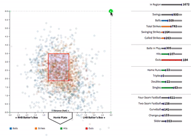

Pitch Plotter Tool
This is a tool for viewing pitches faced by batters in 2019.
Click on a player below to see every pitch they've faced through in 2019 (Updated July 28th).
After selecting a player, you can filter the region of pitches by dragging on the circles in the corner:
And view specific pitches by hovering over the bars on the right: